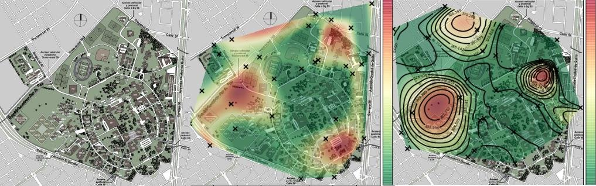
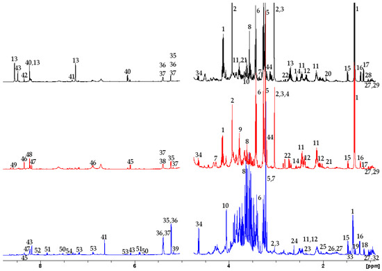
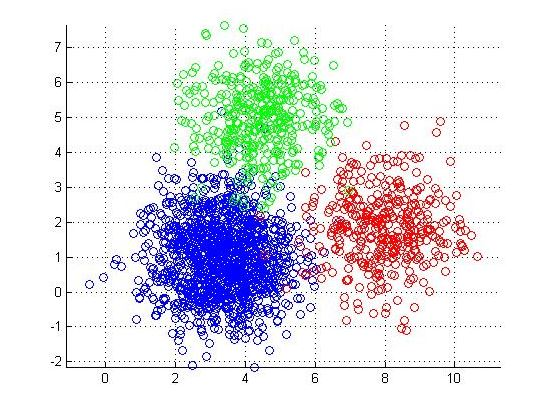

Asesoramiento
Asesoría en la planeación y ejecución de los diseños experimentales que le permitirán validar o confirmar sus metodologías analíticas frente a organismos acreditadores. Ofrecemos nuestros servicios en cualquier parte del proceso: plan de validación, recolección de los datos analíticos, tratamiento estadístico de los datos y/o redacción del informe de validación.
Ejecución
Ofrecemos análisis para todo tipo de muestras: agua, suelo, sedimentos, aire, alimentos. Ensayos fisicoquímicos: pH, CIC, densidad, humedad, nitratos, nitrógeno, carbono orgánico total, grasas, DBO, DQO, cloruros, alcalinidad, etc.; Ensayos cromatográficos: pesticidas, contaminantes, hidrocarburos, fenoles, ensayos a requerimiento para investigación por GC-MS, GC-FID, GC-ECD. Usamos técnicas de extracción convencionales (TCLP, separación L-L, Soxhlet) y técnicas de extracción modernas (extracción asistida por ultrasonido, extracción en fase sólida: SPE, microextracción en fase sólida: SPME) eficientes y rápidas, que disminuyen costos y tiempos de respuesta de los análisis. Tenemos la infraestructura, el know-how, y personal altamente calificado para responder a cualquier requerimiento.

Análisis geográfico
Aplicamos algoritmos en extremo especializados para la predicción de la distribución espacial de cualquier propiedad cuantitativa (concentración de contaminantes o de sustancias de interés, temperatura, pH, humedad, datos poblacionales, etc.). Los mapas pueden ser generados sobre planos, fotografiás aéreas o mapas satelitales. Son ideales para el análisis de cualquier propiedad que se haya ubicado en el espacio (muestras puntuales) porque a diferencia de simples valores tabulados en una tabla, las graficas ademas de permitir entender toda la información disponible de manera rápida nos dan acceso a maneras nuevas de interpretar nuestra data y obtener: posibles focos del/los contaminante(s), plumas de dirección y áreas afectadas..

Análisis multivariable
La aplicación del análisis multivariable en datos de origen químico-analítico abren paso al uso de poderosas herramientas estadísticas que permiten encontrar significado y valor agregado a cualquier conjunto de datos, sin importar su complejidad y heterogeneidad. La enorme cantidad de datos generados por los ensayos analíticos mas modernos (GC-MS, GC-MS/MS, PCR, IR-ATR) e incluso por tan solo el gran número de análisis sencillos con los que describimos nuestras muestras (pH, humedad, alcalinidad, nitrógeno total, etc.) garantiza que sea imposible que una persona pueda encontrar relaciones entre los datos (sobre todo si estas son complejas) sin ayuda de la programación, herramientas estadísticas y por supuesto de creatividad al momento de usarlas. Te invitamos a conocer algunas de las aplicaciones mas excitantes de la quimiometría en la industria y en la investigación.

Estadística aplicada
Una de las aplicaciones mas interesantes de la estadística multivariable. Te abrimos la posibilidad de usar algoritmos en extremo especializados para la clasificación de muestras en base a sus características. Ideal para el seguimiento de la calidad en la industria y la investigación: verificación de origen, añejamiento, control de productos, etc. El clustering es la misma herramienta estadística usada por las grandes compañías de tecnologia (Google, Amazon, Facebook, YouTube, Netflix) para realizar sus búsquedas, clasificar imágenes/videos y sugerirte productos/películas/personas que te podrían gustar/conocer en base a los datos que acumulan sobre tí como usuario. Esta tecnología es a veces confundida con la inteligencia artificial (AI). Aplicada al análisis de los datos que genera una empresa de análisis permite expandir las capacidades analíticas de las organizaciones.

Presentación e informes
Consideramos al análisis y la presentación de los datos un arte. Como analistas de datos somos personas muy creativas, no solo porque tenemos la capacidad de hallarle sentido a conjuntos complejos y heterogéneos de información, sino también porque encontramos maneras de transmitir los resultados, relaciones entre los datos y las conclusiones de manera agradable, sencilla y por sobre todo efectiva. Deseamos promover de esta manera la Belleza de la Analítica.
BOAchem: Beauty Of Analytics & Chemistry | Juntos hacemos ciencia.
Bogotá D.C., Colombia
¡Contáctanos!
E-mail: jcmonroyg@unal.edu.co
WhatsApp/Teléfono: (+57) 316 6626 025